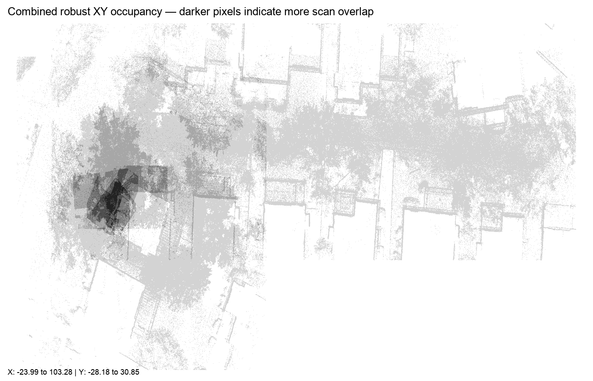

BDPC × CAD Guardian · shared-coordinate audit
Dunn Residence registration overlay audit
Compares robust scan bounds and centers, measures pairwise XY overlap, and generates a combined occupancy image without registering, transforming, or modifying any source scan.
Unit inference: likely meters — 90% heuristic confidence. Compact scan height median is 2.719; this is architecturally plausible in meters and implausibly small in feet.
Combined occupancy

Darker regions indicate that more scan sessions occupy the same XY cells. This is evidence of common-coordinate overlap, not a registration certification.
| Session | Core XYZ native | XYZ converted to feet | Median center XYZ |
|---|---|---|---|
| 20260710222125 | 20.217 × 9.805 × 5.986 | 66.329 × 32.168 × 19.638 | -0.498, 0.615, 0.681 |
| 20260710222318 | 9.408 × 8.184 × 2.570 | 30.866 × 26.850 × 8.432 | -0.327, -0.015, 0.945 |
| 20260710222414 | 10.938 × 10.258 × 2.719 | 35.886 × 33.655 × 8.921 | -0.058, -0.427, 0.498 |
| 20260710222718 | 53.607 × 48.550 × 10.483 | 175.875 × 159.284 × 34.393 | 3.444, -0.927, -0.751 |
| 20260710223037 | 112.582 × 38.679 × 14.055 | 369.363 × 126.899 × 46.112 | 39.276, 8.708, 2.948 |
| Session A | Session B | Overlap of smaller | IoU | Center distance | Z-center delta |
|---|---|---|---|---|---|
| 20260710222318 | 20260710222414 | 100.0% | 68.6% | 0.492 | 0.447 |
| 20260710222414 | 20260710222718 | 100.0% | 4.3% | 3.538 | 1.249 |
| 20260710222318 | 20260710222718 | 100.0% | 3.0% | 3.880 | 1.696 |
| 20260710222125 | 20260710222718 | 100.0% | 7.6% | 4.233 | 1.432 |
| 20260710222414 | 20260710223037 | 100.0% | 2.6% | 40.381 | 2.450 |
| 20260710222318 | 20260710223037 | 100.0% | 1.8% | 40.552 | 2.003 |
| 20260710222125 | 20260710223037 | 100.0% | 4.6% | 40.589 | 2.267 |
| 20260710222125 | 20260710222318 | 95.8% | 36.6% | 0.653 | 0.264 |
| 20260710222125 | 20260710222414 | 91.1% | 49.1% | 1.131 | 0.183 |
| 20260710222718 | 20260710223037 | 55.9% | 26.4% | 37.105 | 3.699 |
Decision boundary: bounding-box overlap is necessary but not sufficient for registration. Final confirmation requires common features to coincide in a compatible point-cloud viewer.